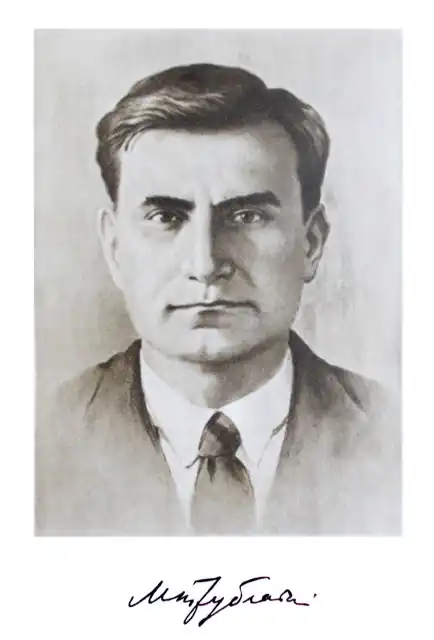
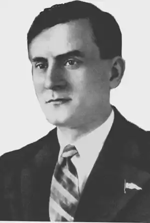

Микола Петрович Трублаїні – людина славної долі і непересічного таланту, журналіст, письменник, педагог, невтомний мандрівник та романтик. З ранньої юності і до останніх днів свого насиченого пригодами життя М.Трублаїні перебував у постійному творчому горінні, у невпинному неспокої. Як влучно висловився про нього друг і однодумець тих часів, відомий письменник Олександр Ільченко: "Микола Трублаїні належав до отої казкової породи невмирайлів, що над ними, либонь, не владна і сама вельможна пані смерть…"
Народився Микола Петрович Трублаєвський (таке справжнє прізвище письменника) 25 квітня 1907 року в с. Вільшанці на Вінниччині.
У 1915 р. Микола вступає до Немирівської гімназії, але довго в ній учитися не довелося: хлопчик тікає на фронт першої світової війни. Але втеча не вдалася: хлопчак зірвався з підніжки вагона, сильно пошкодив ногу, а тому й не дістався до фронту. У сімнадцять років юнак, якого переповнює романтика, починає співпрацювати з вінницькою міською газетою, а вже наступного року його посилають на Всеукраїнські курси журналістики у Харкові, тодішній столиці України. Після закінчення курсів починаються для нього нові, найвищі курси, суворі та безжальні – курси життя. А з ними – мандрівки та мандрівки, про які мріялося з дитинства. 1929 рік, квітень-червень: тропічний рейс легендарного криголама "Літке", на якому в ранзі рядового матроса М.Трублаїні проплив морями-океанами від Севастополя до Владивостока. Той самий рік, липень-жовтень: тривала і небезпечна подорож на тому ж самому криголамі, але вже рейсом арктичним, від Владивостока до острова Врангеля. В 1930 році М.Трублаїні здійснює мандрівку на криголамі "Сибіряков" до далекої, суворої і таємничої Землі Франца-Йосифа. А у 1931 р. доля відправляє невсидючого письменника-романтика у подорож до Сибіру, щоб уже наступного року піти у плавання на криголамі "Русанов" по Білому морю, а далі – мандрівки до Карелії, на Кольський півострів, стежками Криму та Кавказу… Багатющі враження від численних мандрівок Микола Трублаїні описав у оповіданнях, особливо вичерпно – у циклі оповідань 1934-1935 р.р., присвячених далекій півночі. Саме з них він і визначив остаточно головне покликання свого життя – писати для дітей!... У 1934 р. письменник завершує роботу над пригодницькою повістю "Лахтак", де підбиває підсумки теми підкорення Арктики. А вже відразу по виході книги, організовує у Харкові перший у світі клуб юних дослідників Арктики і стає його капітаном. Поряд із копіткими заняттями з дітьми М.Трублаїні не полишає і письменницької праці – основного сенсу власного буття. Вже у 1938 р. в дитячих часописах починають друкуватися перші сторінки його нової пригодницької повісті "Шхуна "Колумб". І в цьому ж році письменник починає працювати над романом "Глибинний шлях", який побачив світ уже після його трагічної загибелі… Коли розпочалася друга світова війна, Микола Трублаїні відразу ж почав "бомбардувати" військкомати з вимогою послати його на фронт. 22 вересня 1941 р. його прохання задовольняють, і через два дні він уже був в одній з газет діючої армії. За завданням редакції 3 жовтня 1941 р. М.П.Трублаїні їде на передову. 4 жовтня машина з журналістами потрапила під ворожий вогонь. Од вибуху бомби він був важко поранений і наступного дня, 5 жовтня 1941 р. помер у санітарному поїзді… Поховано письменника неподалік залізничного насипу у братській могилі поблизу міста Ровеньки на Донбасі… Але й нині письменник Микола Петрович Трублаїні кличе юних читачів-романтиків у захоплюючі мандрівки. Так було вчора, так є сьогодні, так неодмінно буде й завтра! Адже дороги цих мандрівок – і молоді, і вічні, бо з його славнозвісних книг до всіх нас промовляє гаряче серце письменника романтика. Про твори видатного дитячого письменника, нині – трохи незаслужено призабутого, а також про його життєвий шлях, піде мова у рекомендаційному списку. Список складають зібрання творів М.Трублаїні, окремі його твори, публікації із збірників та періодичних видань, матеріали про життєвий і творчий шлях письменника, які організатори дитячого читання можуть порекомендувати юним читачам.